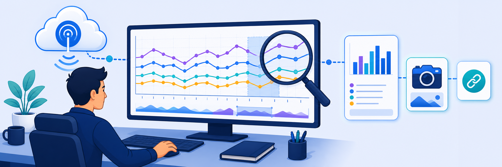

Lab 11: Analyze Data and View Integrated Reports
Scenario: You need to review Zscaler Digital Experience (ZDX) data to understand application and network performance and communicate trends to stakeholders. In this lab you use Data Explorer to build custom queries, download and review Quarterly Business Review (QBR) reports, interact with system-generated Cloud Path reports, and create a ZDX Snapshot URL that gives view-only access to findings without requiring admin credentials.

ZDX collects continuous synthetic probe data from every enrolled endpoint. The reporting layer — Data Explorer, QBR, system reports — is how that raw telemetry becomes actionable insight. Before you start, think about what each tool is optimised for and who its audience is.
- Data Explorer lets you build custom queries across multiple data sources (Web probes, Cloud Path probes, device health). A QBR report is a pre-built PowerPoint covering the same period. When would you reach for Data Explorer instead of the QBR, and vice versa?
- A ZDX Snapshot provides a shareable URL that gives view-only access to a page's current state. What security advantage does this have over sharing admin credentials, and what are its limitations?
Data Explorer lets you build and run custom views against ZDX telemetry — combining probes, metrics, filters, and chart types into a single interactive query. In this task you open Data Explorer, build a query, and explore the chart zoom feature.
- On Corp: Client PC 1, open a browser and navigate to the Zscaler Experience Center.
- Open Data Explorer:
- Go to Analytics > Digital Experience Management > Reporting > Data Explorer.
- If prompted, enable Switch to Existing Reports.
- Alternatively, use the search bar to find the feature directly.
Verify: You can see a list of configured views and their details.
- Create and run a query:
- Select View to organize customized views of applications and metrics.
- In the left panel, configure options such as Data Source, Probes, Metrics, Filters, Operations, View Type, or Overlays.
- Select Run Query.
Verify: You can view graphs that display individual charts for the selected applications and metrics.
- Explore chart details:
- Select and drag to zoom in on a specific area of a chart.
Verify: You can view details for the zoomed time range.
Quarterly Business Review (QBR) reports are pre-built PowerPoint files generated automatically by Zscaler on the first weekend of every month. They provide a structured view of ZDX user experience trends — ready for executive and stakeholder presentations without manual effort.
- Open the QBR reports list:
- In the left navigation bar, select Quarterly Business Reviews.
Verify: You see a list of reports for the covered time period.
- Download and review a report:
- Select the Download icon for the report you want to view.
- Open the downloaded QBR PowerPoint file and review the details.
Verify: You can open the file and view the report content.
A new QBR report is generated on the first weekend of every month. Each report is securely stored as a PowerPoint file in the Zscaler cloud.
System-generated reports provide pre-built views of ZDX telemetry — including Cloud Path End-to-End latency — that you can filter interactively without building a custom query. ZDX Snapshots let you capture any portal page and share a view-only URL with users or stakeholders who do not have admin access.
Step A — Review System-Generated Reports
- Open system-generated reports:
- In the left navigation bar, go to System Generated Reports.
Verify: You see a list of reports.
- Open and interact with a report:
- Select the View icon for the report you want to analyse.
- For Cloud Path End-to-End, filter by Departments, Zscaler Locations, Geolocations, or Applications.
- Select a point in the graph to display a tooltip with latency metrics for the selected locations.
- Drag from left to right to select a time range.
- Select Zoom Out to reset the graph to the original view.
Verify: The graph updates based on your selections.
Up to 20 device locations are displayed at a time in the legend on the right side of the graph, based on user device information.
Step B — Create and Share a ZDX Snapshot
- Create a ZDX Snapshot:
- In the left navigation bar, select ZDX Snapshots.
- Select the Copy icon for an active snapshot.
- Paste the copied link into a new browser window.
Verify: The page displays a green icon in the upper-left corner, indicating you are viewing a ZDX Snapshot.
- Identify the snapshot indicator:
A ZDX Snapshot captures the current state of a UI page and provides a URL that admins can share with ZDX users or other admins for view-only access. Interaction is limited — time range filters, dropdown menus, device selection, and most navigation controls are disabled by default to protect data privacy.
- Three Reporting Layers: Data Explorer (ad-hoc queries — for engineers), QBR (automated monthly PowerPoint — for leadership), and System Generated Reports (pre-built interactive charts — for quick operational insight).
- ZDX Snapshots: Generate a read-only shareable URL capturing the current portal state — share diagnostic data with non-admin recipients without exposing credentials or live data.